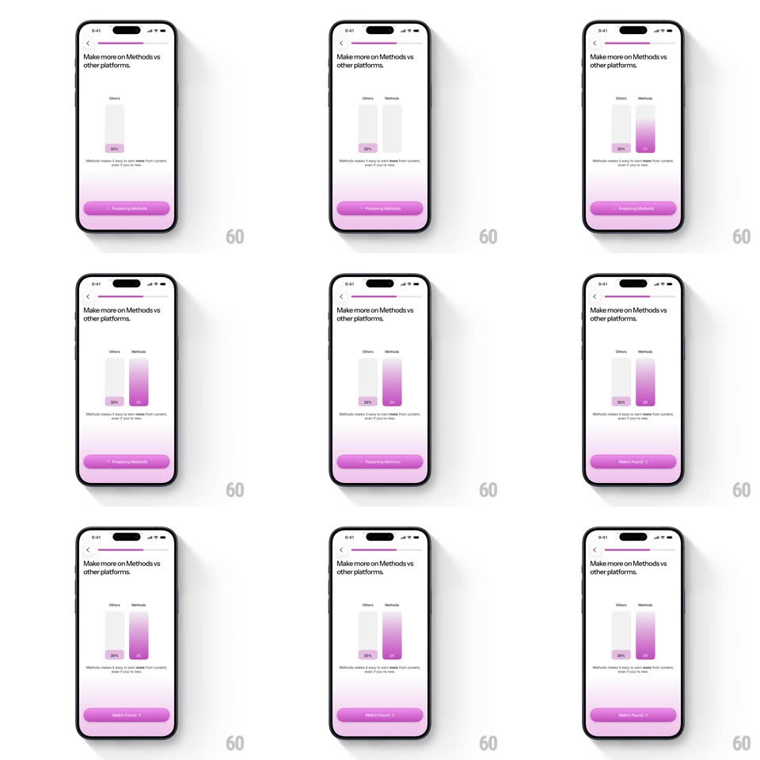

Media
Frame-by-frame

Rebuild this animation 1:1: Methods' comparison chart - the "Others" bar appears stuck at 30% while the "Methods" bar grows tall with a purple gradient and a "2x" badge, washing the lower screen in pink.

Rebuild this animation 1:1: Methods' comparison chart - the "Others" bar appears stuck at 30% while the "Methods" bar grows tall with a purple gradient and a "2x" badge, washing the lower screen in pink.
## Integration
Integration: stack-agnostic spec - springs given as stiffness/damping, timed motions as duration + curve; map every value to your framework and animation library of choice.
## Scene
A light onboarding screen: back chevron, slim progress bar, the headline "Make more on Methods vs other platforms.", a two-bar chart ("Others" gray, short, labeled 30%; "Methods" purple-gradient, tall, labeled 2x), the sub line "Methods makes it easy to earn more from content - even if you're new", and a pink-purple Continue button.
## Motion spec
Pattern: comparative bar growth highlighting the value gap.
- The "Others" bar grows first to its full (short) height (400ms ease-out), its 30% label fading in at its base (200ms).
- After a 300ms beat, the "Methods" bar rises past it: height animates 0 -> full (700ms, ease-out with a slight spring settle ~300/18 at the top) in a vertical purple gradient that deepens as it grows.
- The "2x" badge pops at the Methods bar's base when it lands (scale 0.6 -> 1.1 -> 1, spring ~420/15).
- A soft pink glow washes up from the bottom of the screen as the Methods bar completes (opacity 0 -> 0.35, 500ms) - the glow belongs to the win.
- The two bar labels fade in together first (before growth, 250ms) so the comparison reads before it moves.
## Calibration
- The Others bar never re-animates - it sits still while Methods towers; the stillness is the contrast.
- The Methods bar's gradient runs light-to-deep top-to-bottom - it must not look like a solid fill.
## Reduced motion
Both bars fade in at full height (300ms); no glow wash.
## Don't miss
- The value labels (30%, 2x) sit at the bars' bases inside tinted chips, not on top of the bars.
- The bottom glow ties the chart to the Continue button - same pink family, one visual story.